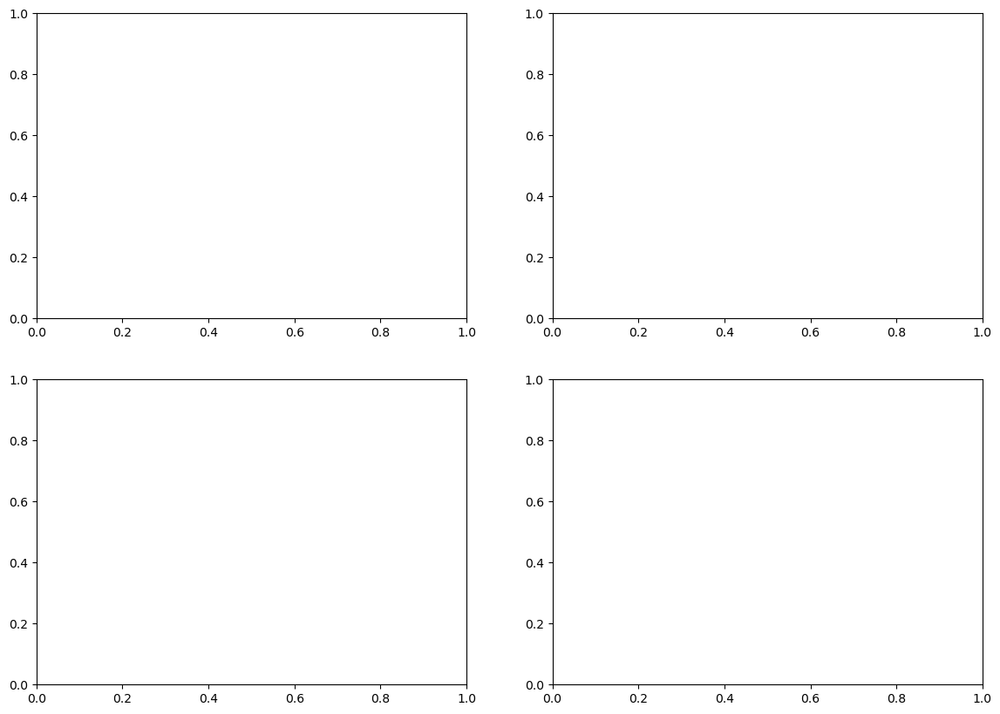
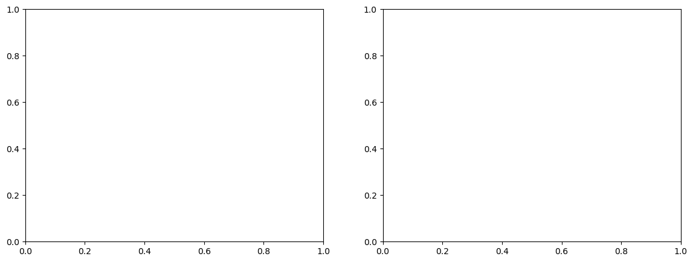
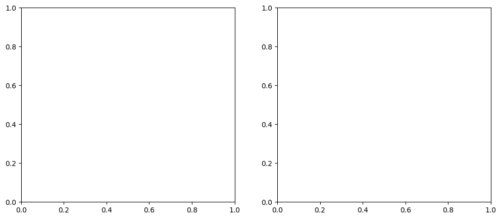

Water, water everywhere!#
A brief look at the effects of evaporation on global climate#
This notebook is part of The Climate Laboratory by Brian E. J. Rose, University at Albany.
1. Imagine a world with reduced efficiency of evaporation#
Recall from [last lecture](./Lecture21 – The surface energy balance.ipynb) that the bulk formula for surface evaporation (latent heat flux) is
which we approximated in terms of temperatures for a wet surface as
The drag coefficient \(C_D\) determines the flux for a given set of temperatures, relative humidity, and wind speed.
Now suppose that the drag coefficient is reduced by a factor of two (for evaporation only, not for sensible heat flux). i.e. all else being equal, there will be half as much evaporation.
Reasoning through the effects of this perturbation (and calculating the effects in models) will give us some insight into several different roles played by water in the climate system.
In-class exercise:#
What is the effect of the reduced evaporation efficiency on surface temperature?
Form small groups.
Each group should formulate a hypothesis about how and why the surface temperature will change when \(C_D\) is reduced by a factor of 2.
Draw a sketch of the surface temperature anomaly as a function of latitude.
Be prepared to explain your sketch and your hypothesis.
2. Reduced evaporation experiment in a simple model with climlab#
We can use climlab to construct a model for the zonal-average climate. The model will be on a pressure-latitude grid. It will include the following processes:
Seasonally varying insolation as function of latitude
RRTMG radiation, including water vapor dependence and prescribed clouds
Fixed relative humidity
Shortave absorption by ozone
Meridional heat transport, implemented as a horizontal down-gradient temperature diffusion at every vertical level
Sensible and Latent heat fluxes at the surface using the bulk formulas
Convective adjustment of the atmospheric lapse rate (not surface)
This model basically draws together all the process models we have developed throughout the course, and adds the surface flux parameterizations.
Note that since we are using explicit surface flux parameterizations, we will now use the convective adjustment only on the atmospheric air temperatures. Previous our adjustment has also modified the surface temperature, which was implicitly taking account of the turbulent heat fluxes.
%matplotlib inline
import numpy as np
import matplotlib.pyplot as plt
import xarray as xr
import climlab
from climlab import constants as const
---------------------------------------------------------------------------
ModuleNotFoundError Traceback (most recent call last)
Cell In[1], line 5
3 import matplotlib.pyplot as plt
4 import xarray as xr
----> 5 import climlab
6 from climlab import constants as const
ModuleNotFoundError: No module named 'climlab'
def inferred_heat_transport( energy_in, lat_deg ):
'''Returns the inferred heat transport (in PW) by integrating the net energy imbalance from pole to pole.'''
from scipy import integrate
from climlab import constants as const
lat_rad = np.deg2rad( lat_deg )
return ( 1E-15 * 2 * np.math.pi * const.a**2 *
integrate.cumtrapz( np.cos(lat_rad)*energy_in,
x=lat_rad, initial=0. ) )
# A two-dimensional domain
num_lev = 50
state = climlab.column_state(num_lev=num_lev, num_lat=60, water_depth=10.)
lev = state.Tatm.domain.axes['lev'].points
---------------------------------------------------------------------------
NameError Traceback (most recent call last)
Cell In[3], line 3
1 # A two-dimensional domain
2 num_lev = 50
----> 3 state = climlab.column_state(num_lev=num_lev, num_lat=60, water_depth=10.)
4 lev = state.Tatm.domain.axes['lev'].points
NameError: name 'climlab' is not defined
Here we specify cloud properties. The combination of the two cloud layers defined below were found to reproduce the global, annual mean energy balance in a single-column model.
We will specify the same clouds everywhere for simplicity. A more thorough investigation would incorporate some meridional variations in cloud properties.
# Define two types of cloud, high and low
cldfrac = np.zeros_like(state.Tatm)
r_liq = np.zeros_like(state.Tatm)
r_ice = np.zeros_like(state.Tatm)
clwp = np.zeros_like(state.Tatm)
ciwp = np.zeros_like(state.Tatm)
# indices
high = 10 # corresponds to 210 hPa
low = 40 # corresponds to 810 hPa
# A high, thin ice layer (cirrus cloud)
r_ice[:,high] = 14. # Cloud ice crystal effective radius (microns)
ciwp[:,high] = 10. # in-cloud ice water path (g/m2)
cldfrac[:,high] = 0.322
# A low, thick, water cloud layer (stratus)
r_liq[:,low] = 14. # Cloud water drop effective radius (microns)
clwp[:,low] = 100. # in-cloud liquid water path (g/m2)
cldfrac[:,low] = 0.21
# wrap everything up in a dictionary
mycloud = {'cldfrac': cldfrac,
'ciwp': ciwp,
'clwp': clwp,
'r_ice': r_ice,
'r_liq': r_liq}
---------------------------------------------------------------------------
NameError Traceback (most recent call last)
Cell In[4], line 2
1 # Define two types of cloud, high and low
----> 2 cldfrac = np.zeros_like(state.Tatm)
3 r_liq = np.zeros_like(state.Tatm)
4 r_ice = np.zeros_like(state.Tatm)
NameError: name 'state' is not defined
plt.plot(cldfrac[0,:], lev)
plt.gca().invert_yaxis()
plt.ylabel('Pressure (hPa)')
plt.xlabel('Cloud fraction')
plt.title('Prescribed cloud fraction in the column model')
plt.show()
---------------------------------------------------------------------------
NameError Traceback (most recent call last)
Cell In[5], line 1
----> 1 plt.plot(cldfrac[0,:], lev)
2 plt.gca().invert_yaxis()
3 plt.ylabel('Pressure (hPa)')
NameError: name 'cldfrac' is not defined
# The top-level model
model = climlab.TimeDependentProcess(state=state, name='Radiative-Convective-Diffusive Model')
# Specified relative humidity distribution
h2o = climlab.radiation.ManabeWaterVapor(state=state)
# Hard convective adjustment for ATMOSPHERE ONLY (not surface)
conv = climlab.convection.ConvectiveAdjustment(state={'Tatm':model.state['Tatm']},
adj_lapse_rate=6.5,
**model.param)
# Annual mean insolation as a function of latitude and time of year
sun = climlab.radiation.DailyInsolation(domains=model.Ts.domain)
# Couple the radiation to insolation and water vapor processes
rad = climlab.radiation.RRTMG(state=state,
specific_humidity=h2o.q,
albedo=0.125,
insolation=sun.insolation,
coszen=sun.coszen,
**mycloud)
model.add_subprocess('Radiation', rad)
model.add_subprocess('Insolation', sun)
model.add_subprocess('WaterVapor', h2o)
model.add_subprocess('Convection', conv)
print( model)
---------------------------------------------------------------------------
NameError Traceback (most recent call last)
Cell In[6], line 2
1 # The top-level model
----> 2 model = climlab.TimeDependentProcess(state=state, name='Radiative-Convective-Diffusive Model')
3 # Specified relative humidity distribution
4 h2o = climlab.radiation.ManabeWaterVapor(state=state)
NameError: name 'climlab' is not defined
Here we add a diffusive heat transport process. The climlab code is set up to handle meridional diffusion level-by-level with a constant coefficient.
from climlab.dynamics import MeridionalDiffusion
# thermal diffusivity in W/m**2/degC
D = 0.04
# meridional diffusivity in m**2/s
K = D / model.Tatm.domain.heat_capacity[0] * const.a**2
d = MeridionalDiffusion(state={'Tatm': model.state['Tatm']},
K=K, **model.param)
model.add_subprocess('Diffusion', d)
---------------------------------------------------------------------------
ModuleNotFoundError Traceback (most recent call last)
Cell In[7], line 1
----> 1 from climlab.dynamics import MeridionalDiffusion
3 # thermal diffusivity in W/m**2/degC
4 D = 0.04
ModuleNotFoundError: No module named 'climlab'
Now we will add the surface heat flux processes. We have not used these before.
Note that the drag coefficient \(C_D\) is passed as an input argument when we create the process. It is also stored as an attribute of the process and can be modified (see below).
The bulk formulas depend on a wind speed \(U\). In this model, \(U\) is specified as a constant. In a model with more complete dynamics, \(U\) would be interactively calculated from the equations of motion.
# Add surface heat fluxes
shf = climlab.surface.SensibleHeatFlux(state=model.state, Cd=0.5E-3)
lhf = climlab.surface.LatentHeatFlux(state=model.state, Cd=0.5E-3)
# set the water vapor input field for LHF
lhf.q = h2o.q
model.add_subprocess('SHF', shf)
model.add_subprocess('LHF', lhf)
---------------------------------------------------------------------------
NameError Traceback (most recent call last)
Cell In[8], line 2
1 # Add surface heat fluxes
----> 2 shf = climlab.surface.SensibleHeatFlux(state=model.state, Cd=0.5E-3)
3 lhf = climlab.surface.LatentHeatFlux(state=model.state, Cd=0.5E-3)
4 # set the water vapor input field for LHF
NameError: name 'climlab' is not defined
The complete model, ready to use!#
print( model)
---------------------------------------------------------------------------
NameError Traceback (most recent call last)
Cell In[9], line 1
----> 1 print( model)
NameError: name 'model' is not defined
model.integrate_years(4.)
---------------------------------------------------------------------------
NameError Traceback (most recent call last)
Cell In[10], line 1
----> 1 model.integrate_years(4.)
NameError: name 'model' is not defined
# One more year to get annual-mean diagnostics
model.integrate_years(1.)
---------------------------------------------------------------------------
NameError Traceback (most recent call last)
Cell In[11], line 2
1 # One more year to get annual-mean diagnostics
----> 2 model.integrate_years(1.)
NameError: name 'model' is not defined
ticks = [-90, -60, -30, 0, 30, 60, 90]
fig, axes = plt.subplots(2,2,figsize=(14,10))
ax = axes[0,0]
ax.plot(model.lat, model.timeave['Ts'])
ax.set_title('Surface temperature (reference)')
ax.set_ylabel('K')
ax2 = axes[0,1]
field = (model.timeave['Tatm']).transpose()
cax = ax2.contourf(model.lat, model.lev, field)
ax2.invert_yaxis()
fig.colorbar(cax, ax=ax2)
ax2.set_title('Atmospheric temperature (reference)');
ax2.set_ylabel('hPa')
ax3 = axes[1,0]
ax3.plot(model.lat, model.timeave['LHF'], label='LHF')
ax3.plot(model.lat, model.timeave['SHF'], label='SHF')
ax3.set_title('Surface heat flux (reference)')
ax3.set_ylabel('W/m2')
ax3.legend();
ax4 = axes[1,1]
Rtoa = np.squeeze(model.timeave['ASR'] - model.timeave['OLR'])
ax4.plot(model.lat, inferred_heat_transport(Rtoa, model.lat))
ax4.set_title('Meridional heat transport (reference)');
ax4.set_ylabel('PW')
for ax in axes.flatten():
ax.set_xlim(-90,90); ax.set_xticks(ticks)
ax.set_xlabel('Latitude'); ax.grid();
---------------------------------------------------------------------------
NameError Traceback (most recent call last)
Cell In[12], line 4
2 fig, axes = plt.subplots(2,2,figsize=(14,10))
3 ax = axes[0,0]
----> 4 ax.plot(model.lat, model.timeave['Ts'])
5 ax.set_title('Surface temperature (reference)')
6 ax.set_ylabel('K')
NameError: name 'model' is not defined

Reducing the evaporation efficiency#
Just need to clone our model, and modify \(C_D\) in the latent heat flux subprocess.
model2 = climlab.process_like(model)
model2.subprocess['LHF'].Cd *= 0.5
model2.integrate_years(4.)
model2.integrate_years(1.)
---------------------------------------------------------------------------
NameError Traceback (most recent call last)
Cell In[13], line 1
----> 1 model2 = climlab.process_like(model)
2 model2.subprocess['LHF'].Cd *= 0.5
3 model2.integrate_years(4.)
NameError: name 'climlab' is not defined
fig, axes = plt.subplots(2,2,figsize=(14,10))
ax = axes[0,0]
ax.plot(model.lat, model2.timeave['Ts'] - model.timeave['Ts'])
ax.set_title('Surface temperature anomaly')
ax.set_ylabel('K')
ax2 = axes[0,1]
field = (model2.timeave['Tatm'] - model.timeave['Tatm']).transpose()
cax = ax2.contourf(model.lat, model.lev, field)
ax2.invert_yaxis()
fig.colorbar(cax, ax=ax2)
ax2.set_title('Atmospheric temperature anomaly');
ax2.set_ylabel('hPa')
ax3 = axes[1,0]
for field in ['LHF','SHF']:
ax3.plot(model2.lat, model2.timeave[field] - model.timeave[field], label=field)
ax3.set_title('Surface heat flux anomalies')
ax3.set_ylabel('W/m2')
ax3.legend();
ax4 = axes[1,1]
Rtoa = np.squeeze(model.timeave['ASR'] - model.timeave['OLR'])
Rtoa2 = np.squeeze(model2.timeave['ASR'] - model2.timeave['OLR'])
ax4.plot(model.lat, inferred_heat_transport(Rtoa2-Rtoa, model.lat))
ax4.set_title('Meridional heat transport anomaly');
ax4.set_ylabel('PW')
for ax in axes.flatten():
ax.set_xlim(-90,90); ax.set_xticks(ticks)
ax.set_xlabel('Latitude'); ax.grid();
print ('The global mean surface temperature anomaly is %0.2f K.'
%np.average(model2.timeave['Ts'] - model.timeave['Ts'],
weights=np.cos(np.deg2rad(model.lat)), axis=0) )
---------------------------------------------------------------------------
NameError Traceback (most recent call last)
Cell In[14], line 3
1 fig, axes = plt.subplots(2,2,figsize=(14,10))
2 ax = axes[0,0]
----> 3 ax.plot(model.lat, model2.timeave['Ts'] - model.timeave['Ts'])
4 ax.set_title('Surface temperature anomaly')
5 ax.set_ylabel('K')
NameError: name 'model' is not defined
This model predicts the following:
The surface temperature warms slightly in the tropics, and cools at high latitudes
The atmosphere gets colder everywhere!
There is a substantial reduction in surface latent heat flux, especially in the tropics where it is dominant.
There is also a substantial increase in sensible heat flux. This is consistent with the cooler air temperatures and warmer surface.
Colder tropical atmosphere leads to a decrease in the poleward heat tranpsort. This helps explain the high-latitude cooling.
Notice that the heat transport responds to the atmopsheric temperature gradient, which changes in the opposite direction of the surface temperature gradient.
Basically, this model predicts that by inhibiting evaporation in the tropics, we force the tropical surface to warm and the tropical atmosphere to cool. This cooling signal is then communicated globally by atmospheric heat transport. The result is small positive global surface temperature anomaly.
Discussion: what is this model missing?#
We could list many things, but as we will see below, two key climate components that are not included in this model are
changes in relative humidity
cloud feedback
We will compare this result to an analogous experiment in a GCM.
3. Reduced evaporation efficiency experiment in an aquaplanet GCM#
The model is the familiar CESM but in simplified “aquaplanet” setup. The surface is completely covered by a shallow slab ocean.
This model setup (with CAM4 model physics) is described in detail in this paper:
Here we will compare a control simulation with a perturbation simulation in which we have once again reduced the drag coefficient by a factor of 2.
# Load the climatologies from the CAM4 aquaplanet runs
datapath = "http://ramadda.atmos.albany.edu:8080/repository/opendap/latest/Top/Users/BrianRose/CESM_runs/"
endstr = "/entry.das"
ctrl = xr.open_dataset(datapath + 'aquaplanet_som/QAqu_ctrl.cam.h0.clim.nc' + endstr, decode_times=False).mean(dim='time')
halfEvap = xr.open_dataset(datapath + 'aquaplanet_som/QAqu_halfEvap.cam.h0.clim.nc' + endstr, decode_times=False).mean(dim='time')
syntax error, unexpected WORD_WORD, expecting SCAN_ATTR or SCAN_DATASET or SCAN_ERROR
context: <!DOCTYPE^ html><html><head><title>Error</title><meta http-equiv="Content-Type" content="text/html; charset=utf-8" /><link rel="stylesheet" href="/repository/htdocs_v3_0_31/lib/fontawesome/css/all.min.css" type="text/css" /><link rel="stylesheet" href="/repository/htdocs_v3_0_31/lib/jquery-ui-1.12.1/jquery-ui.min.css" type="text/css" /><link rel="stylesheet" href="/repository/htdocs_v3_0_31/lib/superfish/css/superfish.css"/><link rel="stylesheet" href="/repository/htdocs_v3_0_31/lib/selectbox/jquery.selectBoxIt.css"/><link rel="stylesheet" href="/repository/htdocs_v3_0_31/lib/jbreadcrumb/Styles/BreadCrumb.css"/><link rel="stylesheet" href="/repository/htdocs_v3_0_31/lib/bootstrap-3.3/css/bootstrap.min.css"/><link rel="stylesheet" href="/repository/htdocs_v3_0_31/lib/fancybox-3/jquery.fancybox.min.css" type="text/css" /><link rel="stylesheet" href="/repository/htdocs_v3_0_31/lib/datatables/jquery.dataTables.min.css" type="text/css" /><link rel="stylesheet" href="/repository/htdocs_v3_0_31/style.css" type="text/css" /><script type="text/javascript" language="JavaScript1.2" src="/repository/htdocs_v3_0_31/lib/jquery/js/jquery-3.3.1.min.js"></script><script type="text/javascript" language="JavaScript1.2" src="/repository/htdocs_v3_0_31/lib/jquery-ui-1.12.1/jquery-ui.min.js"></script><script type="text/javascript" language="JavaScript1.2" src="/repository/htdocs_v3_0_31/lib/datatables/jquery.dataTables.min.js"></script><script type="text/javascript" language="JavaScript1.2" src="/repository/htdocs_v3_0_31/lib/jquery/js/jquery.cookie.js"></script><script type="text/javascript" language="JavaScript1.2" src="/repository/htdocs_v3_0_31/lib/jquery.easing.1.3.js"></script><script type="text/javascript" language="JavaScript1.2" src="/repository/htdocs_v3_0_31/lib/jquery.bt.min.js"></script><script type="text/javascript" language="JavaScript1.2" src="/repository/htdocs_v3_0_31/lib/jbreadcrumb/js/jquery.jBreadCrumb.1.1.js"></script><script type="text/javascript" language="JavaScript1.2" src="/repository/htdocs_v3_0_31/lib/superfish/js/superfish.js"></script><script type="text/javascript" language="JavaScript1.2" src="/repository/htdocs_v3_0_31/lib/selectbox/jquery.selectBoxIt.min.js"></script><script type="text/javascript" language="JavaScript1.2" src="/repository/htdocs_v3_0_31/lib/fancybox-3/jquery.fancybox.min.js"></script><script type="text/javascript" language="JavaScript1.2" src="/repository/htdocs_v3_0_31/base.js"></script><script type="text/javascript" language="JavaScript1.2" src="/repository/htdocs_v3_0_31/utils.js"></script><script type="text/javascript" language="JavaScript1.2" src="/repository/htdocs_v3_0_31/ramadda.js"></script><script type="text/javascript" language="JavaScript1.2" src="/repository/htdocs_v3_0_31/entry.js"></script><script type="text/javascript" language="JavaScript1.2" src="/repository/htdocs_v3_0_31/wiki.js"></script><style type="text/css">.ramadda-footer { margin:0px; padding:10px; text-align:center; background-repeat: repeat; background-image:url(/repository/images/background.png); border-top: 1px #e0e0e0 solid;}.ramadda-innercontent { padding-top: 0px;}.navlinks { margin-top:10px; border-bottom: 1px #444 solid;}.ramadda-header { z-index:1000; position:fixed; padding: 1px; padding-left: 6px; padding-right: 6px; width:100%; left:0; top:0;}/* the margin should be a little more than the max-height of the logo image */.ramadda-outercontents { margin-top:63px;}.ramadda-logo-image {height:60px;max-height:60px;}.ramadda-breadcrumbs { border-bottom : 0px #e0e0e0 solid;}.ramadda-register-outer {text-align:inherit;}</style></head><body><div class="ramadda-header"><table border="0" width="100%" cellspacing="0" cellpadding="0"><tr valign="center"><td width="5%" rowspan="2"><a href="/repository"><img valign="bottom" class="ramadda-logo-image" src="/repository/images/logo.png" ></a></td><td align="right" colspan="2"> </td></tr><tr valign="bottom"><td> </td><td align="right"><div class="ramadda-user-menu" ><a href="javascript:void(0);" onClick="Utils.searchPopup('searchlink');" ><span title="Search" class="ramadda-user-menu-image" id="searchlink" ><i class="fa fa-search"></i></span></a> <a href="javascript:noop();" onClick="showPopup(event,'menulink_949','menu_948',1);" id="menulink_949" class="ramadda-popup-link" ><span title="Login, user settings, help" class="ramadda-user-menu-image" ><i class="fa fa-cog"></i></span></a><div id="menu_948" style="display:none;" class="ramadda-popup" ><div class="ramadda-user-menu" ><div onClick="document.location='/repository/entry/show'" class="ramadda-user-link"><span ><i class="fa fa-home"></i></span> UAlbany DAES RAMADDA Data Repository</div><div onClick="document.location='http://ramadda.atmos.albany.edu:8080/repository/user/login?redirect=L3JlcG9zaXRvcnkvb3BlbmRhcC9sYXRlc3QvVG9wL1VzZXJzL0JyaWFuUm9zZS9DRVNNX3J1bnMvYXF1YXBsYW5ldF9zb20vUUFxdV9jdHJsLmNhbS5oMC5jbGltLm5jL2VudHJ5LmRhcy5kZHM%2F'" class="ramadda-user-link"><span ><i class="fa fa-sign-in-alt"></i></span> Login</div><div onClick="document.location='/repository/user/cart'" class="ramadda-user-link"><img border="0" src="/repository/icons/cart.png" /> Data Cart</div><div onClick="document.location='/repository/docs'" class="ramadda-user-link"><span ><i class="fa fa-question-circle"></i></span> Help</div></div></div></div></td></tr></table></div><div class="ramadda-outercontents"><div class="ramadda-content"><div class="ramadda-innercontent"><div class="ramadda-message" id="messageblock" ><table><tr valign=top><td><div class="ramadda-message-link"><img border="0" src="/repository/icons/error.png" /></div></td><td><div class="ramadda-message-inner">An error has occurred:<p>Could not find entry:/Top/Users/BrianRose/CESM_runs/aquaplanet_som/QAqu_ctrl.cam.h0.clim.nc</div></td></tr></table></div><br><div id="ramadda-popupdiv" class="ramadda-popup" ></div><div id="ramadda-selectdiv" class="ramadda-selectdiv" ></div><div id="ramadda-floatdiv" class="ramadda-floatdiv" ></div><nowiki><script type="text/JavaScript" >$( document ).ready(function() {Utils.initPage(); });</script></nowiki></div> <!-- close ramadda-innercontent --></div> <!-- close ramadda-content --></div> <!-- close ramadda-outercontents --><div class="ramadda-footer"></div><!-- close ramadda-footer --><div class="ramadda-acknowledgement">Powered by <a href="https://geodesystems.com">Geode Systems and RAMADDA</a></div><!-- close bottom --></body></html>
---------------------------------------------------------------------------
KeyError Traceback (most recent call last)
File ~/mini310/envs/a301/lib/python3.13/site-packages/xarray/backends/file_manager.py:211, in CachingFileManager._acquire_with_cache_info(self, needs_lock)
210 try:
--> 211 file = self._cache[self._key]
212 except KeyError:
File ~/mini310/envs/a301/lib/python3.13/site-packages/xarray/backends/lru_cache.py:56, in LRUCache.__getitem__(self, key)
55 with self._lock:
---> 56 value = self._cache[key]
57 self._cache.move_to_end(key)
KeyError: [<class 'netCDF4._netCDF4.Dataset'>, ('http://ramadda.atmos.albany.edu:8080/repository/opendap/latest/Top/Users/BrianRose/CESM_runs/aquaplanet_som/QAqu_ctrl.cam.h0.clim.nc/entry.das',), 'r', (('clobber', True), ('diskless', False), ('format', 'NETCDF4'), ('persist', False)), '17b71b05-40d5-4f88-836c-1ced027c7a13']
During handling of the above exception, another exception occurred:
OSError Traceback (most recent call last)
Cell In[15], line 4
2 datapath = "http://ramadda.atmos.albany.edu:8080/repository/opendap/latest/Top/Users/BrianRose/CESM_runs/"
3 endstr = "/entry.das"
----> 4 ctrl = xr.open_dataset(datapath + 'aquaplanet_som/QAqu_ctrl.cam.h0.clim.nc' + endstr, decode_times=False).mean(dim='time')
5 halfEvap = xr.open_dataset(datapath + 'aquaplanet_som/QAqu_halfEvap.cam.h0.clim.nc' + endstr, decode_times=False).mean(dim='time')
File ~/mini310/envs/a301/lib/python3.13/site-packages/xarray/backends/api.py:670, in open_dataset(filename_or_obj, engine, chunks, cache, decode_cf, mask_and_scale, decode_times, decode_timedelta, use_cftime, concat_characters, decode_coords, drop_variables, inline_array, chunked_array_type, from_array_kwargs, backend_kwargs, **kwargs)
658 decoders = _resolve_decoders_kwargs(
659 decode_cf,
660 open_backend_dataset_parameters=backend.open_dataset_parameters,
(...)
666 decode_coords=decode_coords,
667 )
669 overwrite_encoded_chunks = kwargs.pop("overwrite_encoded_chunks", None)
--> 670 backend_ds = backend.open_dataset(
671 filename_or_obj,
672 drop_variables=drop_variables,
673 **decoders,
674 **kwargs,
675 )
676 ds = _dataset_from_backend_dataset(
677 backend_ds,
678 filename_or_obj,
(...)
688 **kwargs,
689 )
690 return ds
File ~/mini310/envs/a301/lib/python3.13/site-packages/xarray/backends/netCDF4_.py:666, in NetCDF4BackendEntrypoint.open_dataset(self, filename_or_obj, mask_and_scale, decode_times, concat_characters, decode_coords, drop_variables, use_cftime, decode_timedelta, group, mode, format, clobber, diskless, persist, auto_complex, lock, autoclose)
644 def open_dataset(
645 self,
646 filename_or_obj: str | os.PathLike[Any] | ReadBuffer | AbstractDataStore,
(...)
663 autoclose=False,
664 ) -> Dataset:
665 filename_or_obj = _normalize_path(filename_or_obj)
--> 666 store = NetCDF4DataStore.open(
667 filename_or_obj,
668 mode=mode,
669 format=format,
670 group=group,
671 clobber=clobber,
672 diskless=diskless,
673 persist=persist,
674 auto_complex=auto_complex,
675 lock=lock,
676 autoclose=autoclose,
677 )
679 store_entrypoint = StoreBackendEntrypoint()
680 with close_on_error(store):
File ~/mini310/envs/a301/lib/python3.13/site-packages/xarray/backends/netCDF4_.py:452, in NetCDF4DataStore.open(cls, filename, mode, format, group, clobber, diskless, persist, auto_complex, lock, lock_maker, autoclose)
448 kwargs["auto_complex"] = auto_complex
449 manager = CachingFileManager(
450 netCDF4.Dataset, filename, mode=mode, kwargs=kwargs
451 )
--> 452 return cls(manager, group=group, mode=mode, lock=lock, autoclose=autoclose)
File ~/mini310/envs/a301/lib/python3.13/site-packages/xarray/backends/netCDF4_.py:393, in NetCDF4DataStore.__init__(self, manager, group, mode, lock, autoclose)
391 self._group = group
392 self._mode = mode
--> 393 self.format = self.ds.data_model
394 self._filename = self.ds.filepath()
395 self.is_remote = is_remote_uri(self._filename)
File ~/mini310/envs/a301/lib/python3.13/site-packages/xarray/backends/netCDF4_.py:461, in NetCDF4DataStore.ds(self)
459 @property
460 def ds(self):
--> 461 return self._acquire()
File ~/mini310/envs/a301/lib/python3.13/site-packages/xarray/backends/netCDF4_.py:455, in NetCDF4DataStore._acquire(self, needs_lock)
454 def _acquire(self, needs_lock=True):
--> 455 with self._manager.acquire_context(needs_lock) as root:
456 ds = _nc4_require_group(root, self._group, self._mode)
457 return ds
File ~/mini310/envs/a301/lib/python3.13/contextlib.py:141, in _GeneratorContextManager.__enter__(self)
139 del self.args, self.kwds, self.func
140 try:
--> 141 return next(self.gen)
142 except StopIteration:
143 raise RuntimeError("generator didn't yield") from None
File ~/mini310/envs/a301/lib/python3.13/site-packages/xarray/backends/file_manager.py:199, in CachingFileManager.acquire_context(self, needs_lock)
196 @contextlib.contextmanager
197 def acquire_context(self, needs_lock=True):
198 """Context manager for acquiring a file."""
--> 199 file, cached = self._acquire_with_cache_info(needs_lock)
200 try:
201 yield file
File ~/mini310/envs/a301/lib/python3.13/site-packages/xarray/backends/file_manager.py:217, in CachingFileManager._acquire_with_cache_info(self, needs_lock)
215 kwargs = kwargs.copy()
216 kwargs["mode"] = self._mode
--> 217 file = self._opener(*self._args, **kwargs)
218 if self._mode == "w":
219 # ensure file doesn't get overridden when opened again
220 self._mode = "a"
File src/netCDF4/_netCDF4.pyx:2521, in netCDF4._netCDF4.Dataset.__init__()
File src/netCDF4/_netCDF4.pyx:2158, in netCDF4._netCDF4._ensure_nc_success()
OSError: [Errno -70] NetCDF: DAP server error: 'http://ramadda.atmos.albany.edu:8080/repository/opendap/latest/Top/Users/BrianRose/CESM_runs/aquaplanet_som/QAqu_ctrl.cam.h0.clim.nc/entry.das'
lat = ctrl.lat
lon = ctrl.lon
lev = ctrl.lev
---------------------------------------------------------------------------
NameError Traceback (most recent call last)
Cell In[16], line 1
----> 1 lat = ctrl.lat
2 lon = ctrl.lon
3 lev = ctrl.lev
NameError: name 'ctrl' is not defined
TS_anom = halfEvap.TS - ctrl.TS
Tatm_anom = halfEvap['T'] - ctrl['T']
---------------------------------------------------------------------------
NameError Traceback (most recent call last)
Cell In[17], line 1
----> 1 TS_anom = halfEvap.TS - ctrl.TS
2 Tatm_anom = halfEvap['T'] - ctrl['T']
NameError: name 'halfEvap' is not defined
Temperature anomalies#
fig, (ax1,ax2) = plt.subplots(1,2,figsize=(14,5))
ax1.plot(lat, TS_anom.mean(dim='lon')); ax1.set_title('Surface temperature anomaly')
cax2 = ax2.contourf(lat, lev, Tatm_anom.mean(dim='lon'), levels=np.arange(-7, 8., 2.), cmap='seismic')
ax2.invert_yaxis(); fig.colorbar(cax2,ax=ax2); ax2.set_title('Atmospheric temperature anomaly');
for ax in (ax1, ax2):
ax.set_xlim(-90,90); ax.set_xticks(ticks); ax.grid();
print ('The global mean surface temperature anomaly is %0.2f K.' %((TS_anom*ctrl.gw).mean(dim=('lat','lon'))/ctrl.gw.mean(dim='lat')))
---------------------------------------------------------------------------
NameError Traceback (most recent call last)
Cell In[18], line 2
1 fig, (ax1,ax2) = plt.subplots(1,2,figsize=(14,5))
----> 2 ax1.plot(lat, TS_anom.mean(dim='lon')); ax1.set_title('Surface temperature anomaly')
3 cax2 = ax2.contourf(lat, lev, Tatm_anom.mean(dim='lon'), levels=np.arange(-7, 8., 2.), cmap='seismic')
4 ax2.invert_yaxis(); fig.colorbar(cax2,ax=ax2); ax2.set_title('Atmospheric temperature anomaly');
NameError: name 'lat' is not defined

In this model, reducing the evaporation efficiency leads to a much warmer climate. The largest warming occurs in mid-latitudes. The warming is not limited to the surface but in fact extends deeply through the troposphere.
Both the spatial pattern and the magnitude of the warming are completely different than what our much simpler model predicted.
Why?
Compute all the terms in the TOA and surface energy and water budget anomalies#
energy_budget = {}
for name, run in zip(['ctrl','halfEvap'],[ctrl,halfEvap]):
budget = xr.Dataset()
# TOA radiation
budget['OLR'] = run.FLNT
budget['OLR_clr'] = run.FLNTC
budget['ASR'] = run.FSNT
budget['ASR_clr'] = run.FSNTC
budget['Rtoa'] = budget.ASR - budget.OLR # net downwelling radiation
# surface fluxes (all positive UP)
budget['LHF'] = run.LHFLX
budget['SHF'] = run.SHFLX
budget['LWsfc'] = run.FLNS
budget['LWsfc_clr'] = run.FLNSC
budget['SWsfc'] = -run.FSNS
budget['SWsfc_clr'] = -run.FSNSC
budget['SnowFlux'] = ((run.PRECSC+run.PRECSL)
*const.rho_w*const.Lhfus)
# net upward radiation from surface
budget['SfcNetRad'] = budget['LWsfc'] + budget['SWsfc']
budget['SfcNetRad_clr'] = budget['LWsfc_clr'] + budget['SWsfc_clr']
# net upward surface heat flux
budget['SfcNet'] = (budget['SfcNetRad'] + budget['LHF'] +
budget['SHF'] + budget['SnowFlux'])
# net heat flux in to atmosphere
budget['Fatmin'] = budget['Rtoa'] + budget['SfcNet']
# hydrological cycle
budget['Evap'] = run['QFLX'] # kg/m2/s or mm/s
budget['Precip'] = (run['PRECC']+run['PRECL'][:])*const.rho_w # kg/m2/s or mm/s
budget['EminusP'] = budget.Evap - budget.Precip # kg/m2/s or mm/s
energy_budget[name] = budget
---------------------------------------------------------------------------
NameError Traceback (most recent call last)
Cell In[19], line 2
1 energy_budget = {}
----> 2 for name, run in zip(['ctrl','halfEvap'],[ctrl,halfEvap]):
3 budget = xr.Dataset()
4 # TOA radiation
NameError: name 'ctrl' is not defined
# Here we take advantage of xarray!
# We can simply subtract the two xarray.Dataset objects
# to get anomalies for every term
# And also take the zonal averages for all anomaly fields in one line of code
anom = energy_budget['halfEvap'] - energy_budget['ctrl']
zonanom = anom.mean(dim='lon')
---------------------------------------------------------------------------
KeyError Traceback (most recent call last)
Cell In[20], line 5
1 # Here we take advantage of xarray!
2 # We can simply subtract the two xarray.Dataset objects
3 # to get anomalies for every term
4 # And also take the zonal averages for all anomaly fields in one line of code
----> 5 anom = energy_budget['halfEvap'] - energy_budget['ctrl']
6 zonanom = anom.mean(dim='lon')
KeyError: 'halfEvap'
Energy budget anomalies at TOA and surface#
fig, (ax1,ax2) = plt.subplots(1,2,figsize=(14,5))
ax1.plot(lat, zonanom.ASR, color='b', label='ASR')
ax1.plot(lat, zonanom.OLR, color='r', label='OLR')
ax1.plot(lat, zonanom.ASR_clr, color='b', linestyle='--')
ax1.plot(lat, zonanom.OLR_clr, color='r', linestyle='--')
ax1.set_title('TOA radiation anomalies')
ax2.plot(lat, zonanom.SWsfc, color='b', label='SW')
ax2.plot(lat, zonanom.SWsfc_clr, color='b', linestyle='--')
ax2.plot(lat, zonanom.LWsfc, color='g', label='LW')
ax2.plot(lat, zonanom.LWsfc_clr, color='g', linestyle='--')
ax2.plot(lat, zonanom.LHF, color='r', label='LHF')
ax2.plot(lat, zonanom.SHF, color='c', label='SHF')
ax2.plot(lat, zonanom.SfcNet, color='m', label='Net')
ax2.set_title('Surface energy budget anomalies')
for ax in [ax1, ax2]:
ax.set_ylabel('W/m2'); ax.set_xlabel('Latitude')
ax.set_xlim(-90,90); ax.set_xticks(ticks);
ax.legend(); ax.grid();
---------------------------------------------------------------------------
NameError Traceback (most recent call last)
Cell In[21], line 2
1 fig, (ax1,ax2) = plt.subplots(1,2,figsize=(14,5))
----> 2 ax1.plot(lat, zonanom.ASR, color='b', label='ASR')
3 ax1.plot(lat, zonanom.OLR, color='r', label='OLR')
4 ax1.plot(lat, zonanom.ASR_clr, color='b', linestyle='--')
NameError: name 'lat' is not defined
Dashed lines are clear-sky radiation anomalies.
Looking at the TOA budget:
Reducing evaporation efficiency leads to very large increase in ASR, especially in mid-latitudes
This increase is almost entirely due to clouds!
Accompanied by a (mostly) clear-sky OLR increase, consistent with the warmer temperatures.
This is very suggestive of an important role for low-level cloud changes. [Why?]
From the surface budget:
Notice that the decrease in evaporation is much weaker than we found in the simple model.
Here, the decreased evaporation efficiency is competing against the warmer temperatures which tend to strongly increase evaporation, all else being equal.
The surface (ocean) gains a lot of excess heat by solar radiation.
As noted from the TOA budget, this is due to changes in cloudiness.
The clear-sky SW anomaly is actually positive, consistent with a warmer, moister atmosphere (but this effect is small).
The LW anomaly is positive, indicating increased radiative cooling of the surface.
This is also largely a cloud effect, and consistent with a decrease in low-level cloudiness. [Why?]
As in the simple model, there is an increase in the sensible heat flux (though weaker).
According to bulk formula, should be driven by one or both of
increased wind speed
increased air-sea temperature difference
Vertical structure of relative humidity and cloud changes#
fig, (ax1,ax2) = plt.subplots(1,2,figsize=(12,5))
RH = (halfEvap.RELHUM - ctrl.RELHUM).mean(dim='lon'); CLOUD = (halfEvap.CLOUD - ctrl.CLOUD).mean(dim='lon')
contours = np.arange(-15, 16., 2.)
cax1 = ax1.contourf(lat, lev, RH, levels=contours, cmap='seismic'); fig.colorbar(cax1, ax=ax1); ax1.set_title('Relative Humidity (%)')
cax2 = ax2.contourf(lat, lev, 100*CLOUD, levels=contours, cmap='seismic'); ax2.set_title('Cloud fraction (%)')
for ax in [ax1, ax2]:
ax.invert_yaxis(); ax.set_xlim(-90,90); ax.set_xticks(ticks);
---------------------------------------------------------------------------
NameError Traceback (most recent call last)
Cell In[22], line 2
1 fig, (ax1,ax2) = plt.subplots(1,2,figsize=(12,5))
----> 2 RH = (halfEvap.RELHUM - ctrl.RELHUM).mean(dim='lon'); CLOUD = (halfEvap.CLOUD - ctrl.CLOUD).mean(dim='lon')
3 contours = np.arange(-15, 16., 2.)
4 cax1 = ax1.contourf(lat, lev, RH, levels=contours, cmap='seismic'); fig.colorbar(cax1, ax=ax1); ax1.set_title('Relative Humidity (%)')
NameError: name 'halfEvap' is not defined

Meridional heat transport anomalies#
HT = {}
HT['total'] = inferred_heat_transport(anom.Rtoa.mean(dim='lon'), lat)
HT['atm'] = inferred_heat_transport(anom.Fatmin.mean(dim='lon'), lat)
HT['latent'] = inferred_heat_transport(anom.EminusP.mean(dim='lon') * const.Lhvap, lat)
HT['dse'] = HT['atm'] - HT['latent']
---------------------------------------------------------------------------
NameError Traceback (most recent call last)
Cell In[23], line 2
1 HT = {}
----> 2 HT['total'] = inferred_heat_transport(anom.Rtoa.mean(dim='lon'), lat)
3 HT['atm'] = inferred_heat_transport(anom.Fatmin.mean(dim='lon'), lat)
4 HT['latent'] = inferred_heat_transport(anom.EminusP.mean(dim='lon') * const.Lhvap, lat)
NameError: name 'anom' is not defined
fig, ax = plt.subplots()
ax.plot(lat, HT['total'], 'k-', label='total', linewidth=2)
ax.plot(lat, HT['dse'], 'b', label='dry')
ax.plot(lat, HT['latent'], 'r', label='latent')
ax.set_xlim(-90,90); ax.set_xticks(ticks); ax.grid()
ax.legend(loc='upper left'); ax.set_ylabel('PW'); ax.set_xlabel('Latitude')
---------------------------------------------------------------------------
NameError Traceback (most recent call last)
Cell In[24], line 2
1 fig, ax = plt.subplots()
----> 2 ax.plot(lat, HT['total'], 'k-', label='total', linewidth=2)
3 ax.plot(lat, HT['dse'], 'b', label='dry')
4 ax.plot(lat, HT['latent'], 'r', label='latent')
NameError: name 'lat' is not defined

4. Conclusion#
We have forced a climate change NOT by adding any kind of radiative forcing, but just by changing the efficiency of evaporation at the sea surface.
The climate system then find a new equilibrium in which the radiative fluxes, surface temperature, air-sea temperature difference, boundary layer relative humidity, and wind speeds all change simultaneously.
Reasoning our way through such a problem from first principles in practically impossible. This is particularly true because in this example, the dominant driver of the climate change is an increase in SW absorption due to a substantial decrease in low-level clouds across the subtropics and mid-latitudes.
A comprehensive theory to explain these cloud changes does not yet exist. Understanding changes in low-level cloudiness under climate change is enormously important – because these clouds, which have an unambiguous cooling effect, are a key determinant of climate sensitivity. There is lots of work left to do.
Water is intimately involved in just about every aspect of the planetary energy budget. Here we have highlighted the role of water in:
Cooling of the surface by evaporation
Water vapor greenhouse effect
Poleward latent heat transport
Cloud formation
Credits#
This notebook is part of The Climate Laboratory, an open-source textbook developed and maintained by Brian E. J. Rose, University at Albany.
It is licensed for free and open consumption under the Creative Commons Attribution 4.0 International (CC BY 4.0) license.
Development of these notes and the climlab software is partially supported by the National Science Foundation under award AGS-1455071 to Brian Rose. Any opinions, findings, conclusions or recommendations expressed here are mine and do not necessarily reflect the views of the National Science Foundation.